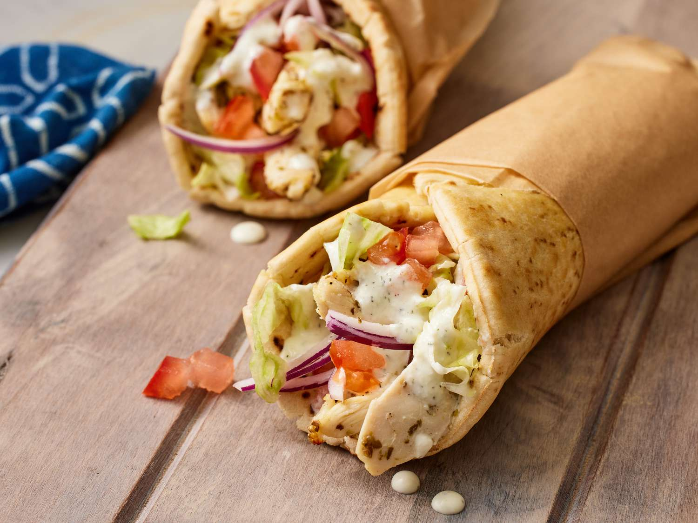

Ételek
Gyros
A gyros Görögországból származik, és fűszeres, forgó nyárson sült húsból készül. Nevét a "gyros" szóról kapta, ami görögül "körtét" jelent, utalva a hús forgatására. Általában pitában tálalják zöldségekkel és tzatziki mártással. Ez az étel gyorsan világszerte népszerűvé vált egyszerű és ízletes formája miatt.
Pestos Tészta
A pestos tészta Genovából, Olaszországból származik, és a híres pesto alla genovese mártásból készül. A "pesto" szó a zúzást jelentő "pestare" olasz igéből ered. Hagyományosan mozsárban készítik friss bazsalikom, fokhagyma, fenyőmag, parmezán és olívaolaj felhasználásával. Világszerte népszerű étel lett egyszerűsége és friss ízei miatt.